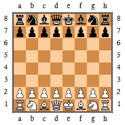
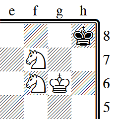
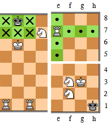

The HTMLTTChess Package
Introduction
The HTMLTTChess package is a combination of a javascript, a css and an html file that allows the rendering of nice chessboards in HTML at any size or color, by using TrueType fonts and without the need of extra images. Chessboards can be rendered in both color or B&W mode, and figurine movements or square of interests can be indicated as well. Chessboards rendered in B&W mode can also be copy-pasted into e.g. an office application.
Here is some screenshots of chessboard positions generated by this package:
  
Want more? Just drop an eye here!
See also here for a summary of supported features.
Table of Content
In these pages, you'll find:
- An overview of the supported features.
- Instructions on how to install and use the HTMLTTChess package.
- Information on the Chess Merida Unicode true type font.
- Reference information on the HTMLTTChess package.
- Some screenshots of the HTMLTTChess package.
- A sample page illustrating the various possibilities offered supported by HTMLTTChess.
History and License Information
The HTMLTTChess package is freeware. It is released under the GNU General Public License. Please feel free to use it, distribute it or modify it. I hope that you'll find it useful, and that you'll be happy with the rendering. If you make any changes or improvements, I would be really happy to hear from . Any other comments or suggestions are of course very much welcome as well.
Check this page for updates.
v1.1 (January 3, 2016)
- Second release, using web fonts in case the client does not have the necessary font installed. For now the solution is very basic but it should work with most modern browsers.
v1.1 (August 13, 2007)
- First release.
Acknowledgements
I'd like to thank designer Armando Hernandez Marroquin, for freely providing the very beautiful and complete font Chess Merida.
Also I'd like to thank Gilles Van Assche for his valuable guidances into the hellish paradise of Internet technologies.
Supported features
Here a summary of supported features:
- Notation:
- Forsyth-Edwards compatible notation.
- Extra symbols for eg. piece movement (
.orx). - Highlighting of squares of interest.
- Rendering:
- Truetype font based rendering.
- Color mode.
- Printer-friendly black&white mode.
- Default mode specification / inline mode specification.
- Size:
- Fixed size.
- Variable size (eg. multiple of browser default font size).
- Style:
- Stylesheet-based.
- Default style.
- Inline style.
- Class style.
- Export:
- Black&white board can be copy-pasted in external applications.
Font-based Method vs. Image-based Method
The usual method to render chessboards in HTML is to combine several small images together to form the complete chessboard. The server stores several small images corresponding to each combination of Black & White figurines on light & dark squares, and the HTML page simply pick the right image for each square on the board to render a given chess position. See for instance the Wikipedia page on Chess for an example of this method.
The method followed here by HTMLTTChess is quite different. Instead of using fixed-size images, it uses characters (glyphs) stored in a chess truetype font to print a given chessboard. The font contains all necessary glyphs to render either black&white chessboards or colored chessboards. Black&White chessboards are very similar to those seen in chess books, and colored chessboards are very close to those rendered on eg. Wikipedia. This method brings several advantages:
- Since font glyphs are actually vector-based graphics, chessboards can be rendered at any size without loss of quality.
- A same web page can contain chessboards of different sizes, and so web masters can use this feature to improve the layout of their pages, adapting the size to each context (start position, intermediate moves...).
- Sizes of chessboards are specified by the attached stylesheet. By using the
emCSS unit, chessboard size automatically adapts to the size of the surrounding text. - Also, visitors may also change the size of chessboards by increasing the default font size in their browser, or by defining their own user stylesheet.
- It is easy to convert color chessboard in a given HTML page to their black&white equivalent to obtain a high-quality printer-friendly version of that page.
- Chessboard rendered in black&white can be easily exported to an office-like application through copy&paste.
There are some minor drawbacks though:
- The rendering requires a specific font on the client. If the client does not have that font installed locally, the font is downloaded from the server as a web font (via CSS3). This might slightly increase the page rendering time, and the quality might be not as good as when the font is installed on the client. But using the CSS/Javascript font detector written by Lalit Patel, you can detect whether the font is available on the visitor's machine, and print a warning message accordingly. These pages already use that detector (see message at the top of this page or in the side bar for instance), so you may want to drop a look in the source code of this page for an example on how to use it.
- Color mode is a bit tricky, and uses CSS and tables to layout the chessboards correctly. So some uncompliant browsers may render the pages incorrectly. In these cases, black&white mode can be used instead since it is easier to render correctly. However large efforts have been done to make the script compatible with a wide sets of OS/browsers. See here for more information.
- The quality of the rendering largely depends on the font rendering engine of your platform. But ClearType (WinXP/Vista) or font anti-aliasing (Linux) give excellent results, even at low pixel per em. See the screenshots page to compare the rendering of your platform to others.